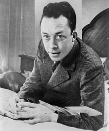

1913-1960 · The 1900s
← The philosophy map · About Camus
If life has no meaning written into it, can it still be worth living to the full?
Every morning the alarm rings. You travel, work, eat, sleep and do it all again. One day you stop on the stairs and think: "Why?" A French-Algerian writer said that moment is where real thinking begins, and his answer to it was not despair but a strange kind of joy.
Read one part at a time. After each part, close your eyes and answer the question before you check.
Albert Camus was born in 1913 in French Algeria. The next year his father was killed in the First World War. He grew up poor in Algiers with his mother, who could barely hear and could not read. At primary school his talent was noticed, and he won a place at a good secondary school. He loved the sea, the sun and football, and played in goal until tuberculosis, a serious lung disease, ended his playing days.
What ended Camus's football career?
Camus studied philosophy and worked as a journalist. In 1942 he published a novel, The Stranger, and an essay, The Myth of Sisyphus. In the Greek myth, the gods punish Sisyphus by making him push a huge rock up a mountain. At the top it rolls down, and he must start again, for ever. For Camus, this is our life: we want meaning, but the world gives no answer. He called this clash 'the absurd'.
What did Camus call 'the absurd'?
During the Second World War, Camus edited Combat, a secret newspaper of the French Resistance. His novel The Plague (1947) shows people fighting a disease together, with no hope of a final victory. He and Sartre were friends, but they broke up bitterly over politics in 1952. In 1957 he won the Nobel Prize for Literature. Three years later he died in a car crash, aged 46. It is said an unused train ticket was in his pocket.
Why did Camus and Sartre stop being friends?
Each word is hidden in a sentence. Read it aloud and say what you think the bold word means. Then reveal and compare.
Which reactions run away from the absurd, and which live with it, like Camus's Sisyphus? Decide together, then reveal.
Now you: explain Camus's idea of the absurd to a friend who has never heard of it. Speak for about a minute. Use the starters if they help.
A machine can tell you, with total certainty, the meaning and purpose of your life. Once you hear the answer, you can never change it. It might be something wonderful, or something small and strange.
Tap two cards. Use the timer to keep going, and use at least two of the phrases above.
No looking back. Answer from memory first, then check.
What did Sartre mean by "existence comes before essence"?
According to William James, how should we judge whether an idea is true?
What did Schopenhauer believe drives all of life, and what gives us relief from it?
What was Spinoza's big idea about God and Nature?
From memory, out loud. Then check.
1. What did Camus mean by "the absurd"?
2. Why did Camus say "One must imagine Sisyphus happy"?
3. What did Camus do during the Second World War?
4. What does 'fulfilling' mean? Give an example.